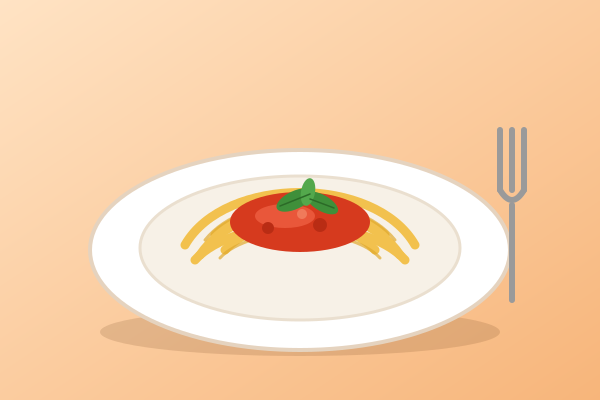

Паста карбонара
Сливочная классика с беконом, яичными желтками и сыром пекорино. Готовится за 20 минут.
Простой рецепт на каждый день — всего 30 минут и несколько доступных продуктов
Паста с томатным соусом — одно из самых популярных блюд итальянской кухни. Для неё не нужны редкие продукты: достаточно спагетти, спелых помидоров, чеснока и немного оливкового масла.
Главный секрет вкусного блюда — правильно сваренная паста и ароматный соус, который томится на медленном огне. Такой ужин легко приготовить даже начинающему повару, а результат понравится всей семье.
Подробнее об истории пасты можно прочитать в Википедии, а ниже — всё необходимое для приготовления: список продуктов, пошаговый способ и таблица пищевой ценности.

Совет: не выливайте всю воду после варки пасты — пара ложек придаст соусу шелковистую текстуру.
| Показатель | На 100 г | На порцию (300 г) |
|---|---|---|
| Калории, ккал | 130 | 390 |
| Белки, г | 4,5 | 13,5 |
| Жиры, г | 3,5 | 10,5 |
| Углеводы, г | 20 | 60 |
Сливочная классика с беконом, яичными желтками и сыром пекорино. Готовится за 20 минут.
Нежные творожные сырники с золотистой корочкой. Подавайте со сметаной и свежими ягодами.
Наваристый борщ со свёклой и говядиной. Лучше всего он получается на следующий день.
Ароматный пирог с корицей и сочной яблочной начинкой — идеален к чаю в выходной день.